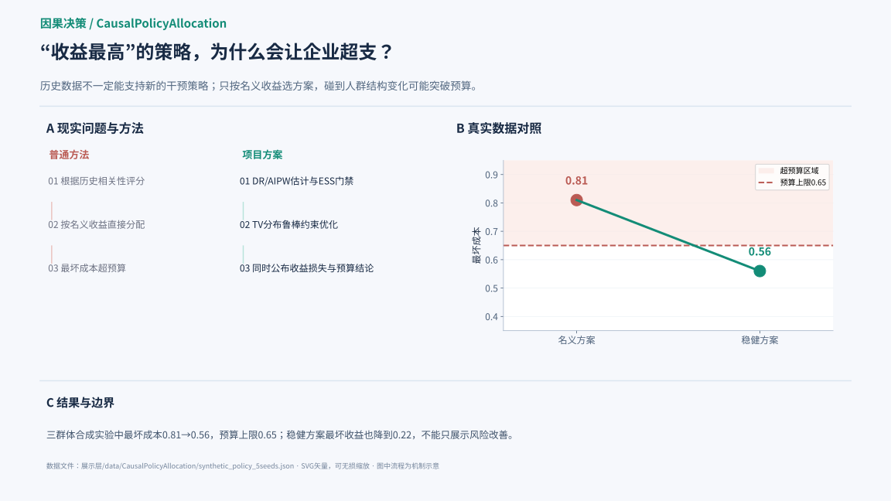

因果决策 / CausalPolicyAllocation
“收益最高”的策略，为什么会让企业超支？
历史数据不一定能支持新的干预策略；只按名义收益选方案，碰到人群结构变化可能突破预算。
01 / 为什么这个问题值得解决
仅用历史相关性预测收益，缺少支持域检查，分布漂移时会失去预算可行性。
02 / 看见差别：普通方法如何失效，项目如何介入
普通方案
普通方法／风险路径
风险所在：关键状态可能被误认
阶段 1根据历史相关性评分
阶段 2按名义收益直接分配
阶段 3最坏成本超预算
项目方案
有证据的项目方法
解决方式：明确条件，留下验证证据
阶段 1DR/AIPW估计与ESS门禁
阶段 2TV分布鲁棒约束优化
阶段 3同时公布收益损失与预算结论
阶段 1 / 3
历史业绩最好，不代表改变策略就会更好
普通方法：风险在哪里旧做法：将预测分数当成干预收益。
项目方法：具体改变什么项目方法：用倾向模型、交叉拟合和双重稳健得分检查策略收益的识别条件。
过程为机制示意，帮助非技术读者理解不同决策逻辑；不是未经测量的真实系统运行轨迹。
03 / 技术细节与证据放在同一个画面

0.81 → 0.56
最坏成本 · 预算上限0.65
三群体合成实验中最坏成本0.81→0.56，预算上限0.65；稳健方案最坏收益也降到0.22，不能只展示风险改善。
三群体合成实验中最坏成本0.81→0.56，预算上限0.65；稳健方案最坏收益也降到0.22，不能只展示风险改善。
原始数据：CausalPolicyAllocation/synthetic_policy_5seeds.json。图像采用SVG矢量格式，可放大用于演示和阅读。基线与结论均限定于数据文件对应的实验条件。